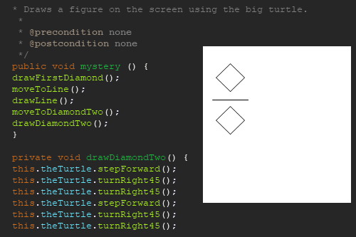
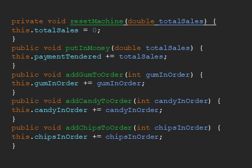
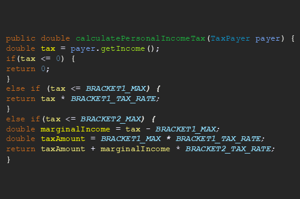
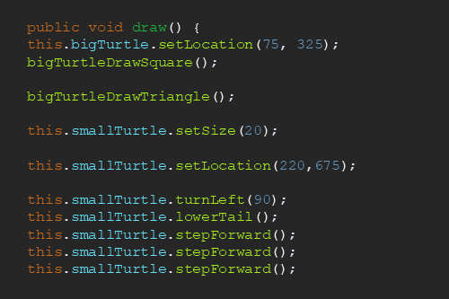
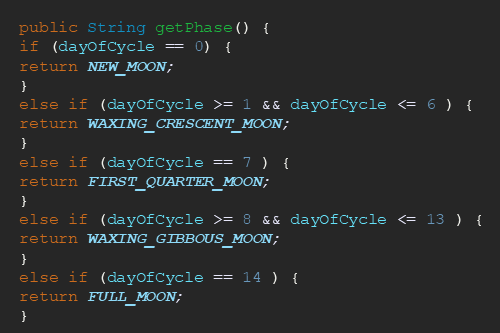
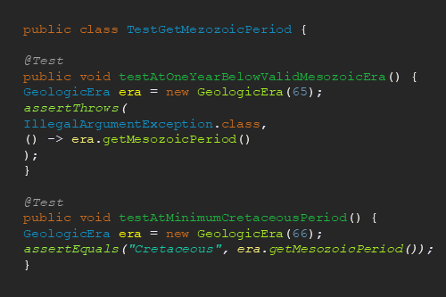

In this homework, I learned how to make my turtle move and draw while refactoring my code.

In this homework, I was able to write various methods and make a functional vending machine.

This was my first time making constants and using if statements to calculate taxes.

For my first project I had to make a turtle draw while refactoring my code and making private helper methods.

In my second project I made methods, used branches, and made constants to get the phase of the moon.

JUnit testing is code made to test you production code, it helps you fix any mistakes in your code faster and they don't take long to do.